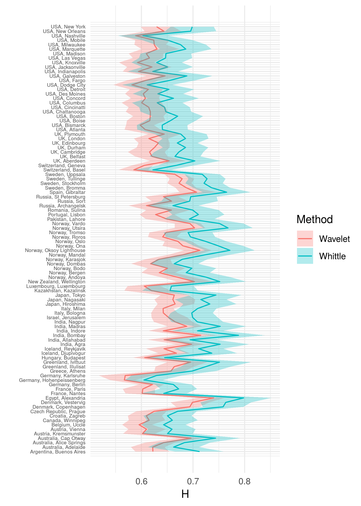

By Mariachiara Fortuna | May 1, 2020
Affiliations:
John K. Dagsvik, Statistics Norway, Research Department;
Mariachiara Fortuna, freelance statistician, Turin;
Sigmund Hov Moen, Westerdals Oslo School of Arts, Communication and Technology.
Corresponding author:
John K. Dagsvik, E-mail: john.dagsvik@ssb.no
Mariachiara Fortuna, E-mail: mariachiara.fortuna@vanlog.it (reference for code and analysis)
Table C1. Estimation results when using the characteristic function estimator and the Whittle method. Monthly data.
| Weather station | $H_c$ | $H_w$ | $SE(H_w)$ |
|---|---|---|---|
| Argentina, Buenos Aires | 0.785 | 0.713 | 0.016 |
| Australia, Adelaide | 0.696 | 0.662 | 0.016 |
| Australia, Alice Springs | 0.700 | 0.683 | 0.017 |
| Australia, Cap Otway | 0.803 | 0.744 | 0.016 |
| Austria, Kremsmunster | 0.655 | 0.651 | 0.016 |
| Austria, Vienna | 0.684 | 0.659 | 0.015 |
| Belgium, Uccle | 0.660 | 0.643 | 0.014 |
| Canada, Winnipeg | 0.654 | 0.660 | 0.016 |
| Croatia, Zagreb | 0.654 | 0.650 | 0.015 |
| Czech Republic, Prague | 0.684 | 0.670 | 0.012 |
| Denmark, Copenhagen | 0.755 | 0.758 | 0.013 |
| Denmark, Vestervig | 0.725 | 0.763 | 0.016 |
| Egypt, Alexandria | 0.773 | 0.798 | 0.018 |
| France, Nantes | 0.643 | 0.643 | 0.015 |
| France, Paris | 0.733 | 0.672 | 0.012 |
| Germany, Berlin | 0.664 | 0.662 | 0.012 |
| Germany, Hohenpeissenberg | 0.617 | 0.605 | 0.012 |
| Germany, Karlsruhe | 0.642 | 0.629 | 0.016 |
| Greece, Athens | 0.682 | 0.698 | 0.015 |
| Greenland, Illulisat | 0.738 | 0.725 | 0.016 |
| Greenland, Ivittuut | 0.782 | 0.751 | 0.020 |
| Hungary, Budapest | 0.627 | 0.645 | 0.012 |
| Iceland, Djupivogur | 0.762 | 0.736 | 0.016 |
| Iceland, Reykjavik | 0.731 | 0.711 | 0.016 |
| India, Agra | 0.731 | 0.753 | 0.019 |
| India, Allahabad | 0.699 | 0.694 | 0.017 |
| India, Bombay | 0.783 | 0.788 | 0.017 |
| India, Indore | 0.734 | 0.709 | 0.017 |
| India, Madras | 0.751 | 0.753 | 0.017 |
| India, Nagpur | 0.697 | 0.708 | 0.017 |
| Israel, Jerusalem | 0.685 | 0.699 | 0.016 |
| Italy, Bologna | 0.702 | 0.698 | 0.014 |
| Italy, Milan | 0.724 | 0.709 | 0.012 |
| Japan, Hiroshima | 0.731 | 0.733 | 0.017 |
| Japan, Nagasaki | 0.738 | 0.715 | 0.017 |
| Japan, Tokyo | 0.795 | 0.744 | 0.016 |
| Kazakhstan, Kazalinsk | 0.609 | 0.655 | 0.018 |
| Luxembourg, Luxembourg | 0.675 | 0.658 | 0.014 |
| New Zealand, Wellington | 0.774 | 0.752 | 0.017 |
| Norway, Andoya | 0.723 | 0.725 | 0.016 |
| Norway, Bergen | 0.678 | 0.687 | 0.015 |
| Norway, Bodo | 0.680 | 0.698 | 0.016 |
| Norway, Dombas | 0.633 | 0.664 | 0.015 |
| Norway, Karasjok | 0.655 | 0.679 | 0.016 |
| Norway, Mandal | 0.682 | 0.724 | 0.016 |
| Norway, Oksoy Lighthouse | 0.719 | 0.771 | 0.016 |
| Norway, Ona | 0.711 | 0.749 | 0.016 |
| Norway, Oslo | 0.693 | 0.724 | 0.014 |
| Norway, Roros | 0.667 | 0.695 | 0.016 |
| Norway, Tromso | 0.670 | 0.690 | 0.016 |
| Norway, Utsira | 0.735 | 0.768 | 0.016 |
| Norway, Vardo | 0.765 | 0.751 | 0.016 |
| Pakistan, Lahore | 0.649 | 0.693 | 0.016 |
| Portugal, Lisbon | 0.769 | 0.710 | 0.017 |
| Romania, Sulina | 0.653 | 0.699 | 0.017 |
| Russia, Archangelsk | 0.675 | 0.661 | 0.016 |
| Russia, Sort | 0.640 | 0.694 | 0.018 |
| Russia, St Petersburg | 0.697 | 0.696 | 0.017 |
| Spain, Gibraltar | 0.773 | 0.765 | 0.015 |
| Sweden, Bromma | 0.694 | 0.736 | 0.012 |
| Sweden, Stockholm | 0.681 | 0.721 | 0.012 |
| Sweden, Tullinge | 0.672 | 0.727 | 0.012 |
| Sweden, Uppsala | 0.690 | 0.718 | 0.011 |
| Switzerland, Basel | 0.625 | 0.622 | 0.012 |
| Switzerland, Geneva | 0.693 | 0.667 | 0.012 |
| UK, Aberdeen | 0.691 | 0.704 | 0.017 |
| UK, Belfast | 0.650 | 0.665 | 0.016 |
| UK, Cambridge | 0.678 | 0.673 | 0.016 |
| UK, Durham | 0.698 | 0.686 | 0.015 |
| UK, Edinbourg | 0.644 | 0.670 | 0.013 |
| UK, London | 0.721 | 0.686 | 0.015 |
| UK, Plymouth | 0.624 | 0.676 | 0.017 |
| USA, Atlanta | 0.632 | 0.641 | 0.016 |
| USA, Bismarck | 0.655 | 0.640 | 0.016 |
| USA, Boise | 0.654 | 0.656 | 0.016 |
| USA, Boston | 0.693 | 0.670 | 0.016 |
| USA, Chattanooga | 0.637 | 0.647 | 0.016 |
| USA, Cincinatti | 0.656 | 0.645 | 0.016 |
| USA, Columbus | 0.629 | 0.631 | 0.016 |
| USA, Concord | 0.687 | 0.662 | 0.016 |
| USA, Des Moines | 0.626 | 0.632 | 0.016 |
| USA, Detroit | 0.659 | 0.653 | 0.016 |
| USA, Dodge City | 0.626 | 0.611 | 0.016 |
| USA, Fargo | 0.656 | 0.655 | 0.016 |
| USA, Galveston | 0.662 | 0.688 | 0.017 |
| USA, Indianapolis | 0.611 | 0.622 | 0.016 |
| USA, Jacksonville | 0.608 | 0.651 | 0.016 |
| USA, Knoxville | 0.624 | 0.630 | 0.016 |
| USA, Las Vegas | 0.643 | 0.647 | 0.017 |
| USA, Madison | 0.641 | 0.647 | 0.016 |
| USA, Marquette | 0.688 | 0.686 | 0.017 |
| USA, Milwaukee | 0.689 | 0.676 | 0.016 |
| USA, Mobile | 0.617 | 0.651 | 0.016 |
| USA, Nashville | 0.581 | 0.603 | 0.016 |
| USA, New Orleans | 0.696 | 0.695 | 0.017 |
| USA, New York | 0.745 | 0.699 | 0.014 |
Due to the fact that the monthly time series are quite long, the estimates of the Hurst parameter are quite precise. From Table C1 we note that the difference between the characteristic function estimates and the Whittle estimates of the Hurst parameter are only significantly different in a few cases.
Table C2. Estimates and test statistics based on annual data
| Weather station | $H_c$ | $Q(H_c)$ | $H_w$ | $SE(H_w)$ | $Q(H_w)$ |
|---|---|---|---|---|---|
| Argentina, Buenos Aires | 0.951 | 4.960 | 0.938 | 0.055 | -0.222 |
| Australia, Adelaide | 0.882 | 2.511 | 0.781 | 0.058 | 0.336 |
| Australia, Alice Springs | 0.647 | -0.040 | 0.708 | 0.058 | 0.062 |
| Australia, Cap Otway | 0.905 | 0.222 | 0.869 | 0.059 | 0.157 |
| Austria, Kremsmunster | 0.728 | -0.679 | 0.782 | 0.058 | 0.273 |
| Austria, Vienna | 0.811 | -0.527 | 0.806 | 0.055 | -0.270 |
| Belgium, Uccle | 0.740 | -0.086 | 0.739 | 0.050 | 0.011 |
| Canada, Winnipeg | 0.713 | 0.346 | 0.728 | 0.058 | 0.174 |
| Croatia, Zagreb | 0.723 | 0.888 | 0.780 | 0.055 | -0.144 |
| Czech Republic, Prague | 0.745 | 0.442 | 0.716 | 0.043 | 0.012 |
| Denmark, Copenhagen | 0.817 | 0.092 | 0.753 | 0.045 | 0.007 |
| Denmark, Vestervig | 0.699 | 0.093 | 0.733 | 0.056 | 0.008 |
| Egypt, Alexandria | 0.882 | 0.224 | 0.862 | 0.064 | 0.010 |
| France, Nantes | 0.738 | -0.494 | 0.720 | 0.052 | 0.120 |
| France, Paris | 0.873 | 0.574 | 0.802 | 0.042 | -0.010 |
| Germany, Berlin | 0.726 | -0.053 | 0.712 | 0.041 | -0.041 |
| Germany, Hohenpeissenberg | 0.701 | 1.053 | 0.684 | 0.043 | -0.338 |
| Germany, Karlsruhe | 0.728 | 0.209 | 0.819 | 0.059 | 0.172 |
| Greece, Athens | 0.754 | 0.863 | 0.788 | 0.054 | 0.094 |
| Greenland, Illulisat | 0.806 | 0.839 | 0.805 | 0.057 | 0.000 |
| Greenland, Ivittuut | 0.797 | -0.202 | 0.804 | 0.071 | -0.273 |
| Hungary, Budapest | 0.682 | 0.288 | 0.663 | 0.043 | -0.115 |
| Iceland, Djupivogur | 0.852 | 0.084 | 0.841 | 0.058 | 0.332 |
| Iceland, Reykjavik | 0.889 | 0.996 | 0.885 | 0.057 | 0.146 |
| India, Agra | 0.802 | -0.281 | 0.844 | 0.066 | 0.184 |
| India, Allahabad | 0.706 | -1.135 | 0.807 | 0.059 | -0.839 |
| India, Bombay | 0.793 | -0.072 | 0.887 | 0.059 | 0.087 |
| India, Indore | 0.820 | -0.303 | 0.899 | 0.059 | -0.534 |
| India, Madras | 0.775 | -0.511 | 0.906 | 0.059 | -0.328 |
| India, Nagpur | 0.610 | -0.424 | 0.727 | 0.058 | -0.158 |
| Israel, Jerusalem | 0.702 | 0.022 | 0.654 | 0.057 | -0.060 |
| Italy, Bologna | 0.819 | 0.602 | 0.845 | 0.048 | -0.723 |
| Italy, Milan | 0.851 | -1.014 | 0.826 | 0.043 | -0.281 |
| Japan, Hiroshima | 0.798 | -0.165 | 0.738 | 0.059 | -0.267 |
| Japan, Nagasaki | 0.823 | 0.026 | 0.761 | 0.058 | 0.014 |
| Japan, Tokyo | 0.926 | -0.235 | 0.851 | 0.058 | -0.086 |
| Kazakhstan, Kazalinsk | 0.611 | -0.250 | 0.563 | 0.061 | -0.216 |
| Luxembourg, Luxembourg | 0.815 | -1.068 | 0.825 | 0.051 | 1.062 |
| New Zealand, Wellington | 0.810 | -0.618 | 0.919 | 0.060 | -0.296 |
| Norway, Andoya | 0.773 | 0.049 | 0.761 | 0.055 | -0.013 |
| Norway, Bergen | 0.783 | -0.377 | 0.717 | 0.053 | 0.206 |
| Norway, Bodo | 0.700 | -0.289 | 0.682 | 0.054 | -0.130 |
| Norway, Dombas | 0.679 | 3.476 | 0.637 | 0.053 | 3.275 |
| Norway, Karasjok | 0.655 | -0.386 | 0.652 | 0.056 | 0.627 |
| Norway, Mandal | 0.620 | -0.499 | 0.625 | 0.054 | 0.368 |
| Norway, Oksoy Lighthouse | 0.666 | -0.126 | 0.672 | 0.055 | 0.156 |
| Norway, Ona | 0.674 | -0.139 | 0.702 | 0.056 | 0.030 |
| Norway, Oslo | 0.692 | 0.464 | 0.699 | 0.047 | -0.130 |
| Norway, Roros | 0.727 | -0.333 | 0.688 | 0.055 | -0.229 |
| Norway, Tromso | 0.616 | -0.318 | 0.641 | 0.054 | 0.005 |
| Norway, Utsira | 0.738 | -0.094 | 0.753 | 0.055 | -0.040 |
| Norway, Vardo | 0.724 | -0.053 | 0.770 | 0.054 | -0.017 |
| Pakistan, Lahore | 0.659 | 0.047 | 0.743 | 0.057 | 0.020 |
| Portugal, Lisbon | 0.933 | 0.211 | 0.931 | 0.060 | -0.221 |
| Romania, Sulina | 0.591 | 0.121 | 0.631 | 0.057 | -0.121 |
| Russia, Archangelsk | 0.707 | 1.187 | 0.746 | 0.058 | -0.369 |
| Russia, Sort | 0.594 | 0.722 | 0.581 | 0.062 | 0.431 |
| Russia, St Petersburg | 0.670 | -0.161 | 0.706 | 0.058 | 7.045 |
| Spain, Gibraltar | 0.787 | -0.075 | 0.855 | 0.056 | 0.283 |
| Sweden, Bromma | 0.688 | 0.202 | 0.690 | 0.041 | -0.043 |
| Sweden, Stockholm | 0.614 | 5.121 | 0.632 | 0.041 | -0.940 |
| Sweden, Tullinge | 0.624 | 1.523 | 0.622 | 0.041 | -0.312 |
| Sweden, Uppsala | 0.715 | 1.135 | 0.710 | 0.040 | -0.291 |
| Switzerland, Basel | 0.664 | 0.558 | 0.720 | 0.042 | -0.753 |
| Switzerland, Geneva | 0.845 | -0.537 | 0.818 | 0.042 | 0.563 |
| UK, Aberdeen | 0.771 | 0.268 | 0.767 | 0.058 | -0.245 |
| UK, Belfast | 0.707 | -0.576 | 0.727 | 0.058 | 0.252 |
| UK, Cambridge | 0.773 | -1.596 | 0.781 | 0.056 | 4.131 |
| UK, Durham | 0.771 | -0.656 | 0.761 | 0.052 | 3.554 |
| UK, Edinbourg | 0.605 | -1.430 | 0.626 | 0.045 | 2.282 |
| UK, London | 0.798 | -0.543 | 0.809 | 0.053 | 1.394 |
| UK, Plymouth | 0.559 | 0.268 | 0.671 | 0.058 | 1.633 |
| USA, Atlanta | 0.766 | 2.043 | 0.725 | 0.058 | 1.774 |
| USA, Bismarck | 0.749 | 1.135 | 0.761 | 0.058 | 0.631 |
| USA, Boise | 0.725 | -0.017 | 0.698 | 0.057 | -0.281 |
| USA, Boston | 0.728 | 0.389 | 0.724 | 0.058 | 0.541 |
| USA, Chattanooga | 0.744 | 0.715 | 0.695 | 0.057 | 0.684 |
| USA, Cincinatti | 0.758 | -0.108 | 0.718 | 0.058 | 0.685 |
| USA, Columbus | 0.705 | -1.449 | 0.702 | 0.057 | 0.248 |
| USA, Concord | 0.790 | 0.012 | 0.729 | 0.058 | -0.255 |
| USA, Des Moines | 0.621 | 0.042 | 0.623 | 0.056 | -0.247 |
| USA, Detroit | 0.707 | 1.846 | 0.663 | 0.057 | -1.948 |
| USA, Dodge City | 0.648 | 0.123 | 0.715 | 0.058 | -0.191 |
| USA, Fargo | 0.738 | 2.083 | 0.725 | 0.058 | 0.948 |
| USA, Galveston | 0.674 | -0.566 | 0.666 | 0.057 | -0.104 |
| USA, Indianapolis | 0.667 | 1.495 | 0.658 | 0.057 | -0.726 |
| USA, Jacksonville | 0.664 | 0.212 | 0.618 | 0.056 | -0.423 |
| USA, Knoxville | 0.744 | -0.773 | 0.680 | 0.057 | 0.267 |
| USA, Las Vegas | 0.707 | -0.310 | 0.694 | 0.060 | -0.100 |
| USA, Madison | 0.673 | -0.336 | 0.682 | 0.057 | -0.347 |
| USA, Marquette | 0.694 | -0.026 | 0.716 | 0.058 | -0.167 |
| USA, Milwaukee | 0.683 | -1.088 | 0.755 | 0.058 | -0.247 |
| USA, Mobile | 0.678 | 3.408 | 0.672 | 0.057 | 0.667 |
| USA, Nashville | 0.609 | -0.240 | 0.625 | 0.057 | 0.360 |
| USA, New Orleans | 0.861 | 4.034 | 0.812 | 0.058 | -0.570 |
| USA, New York | 0.907 | 4.772 | 0.843 | 0.049 | 2.002 |
From the results in Table C2 we note that the estimates of the Hurst parameter based on annual data are, on average, higher than the corresponding estimates based on monthly data. Furthermore, we see that data from 9 weather stations reject the FGN hypothesis when using the characteristic function estimate of the Hurst parameter whereas data from 6 weather stations reject the FGN when using the Whittle estimate of the Hurst parameter.
Table C3. Estimates and test statistics based on Moberg et al.(2005) time series
| Parameters and statistics | Value |
|---|---|
| $\mu$ | -0.354 |
| $\sigma$ | 0.220 |
| $\mu_c$ | -0.354 |
| $\sigma_c$ | 0.051 |
| $H_c$ | 0.917 |
| $H_w$ | 0.990 |
| $SE(H_w)$ | 0.015 |
| $Q(H_c)$ | -11.205 |
| $Q(H_w)$ | 104.220 |
The results of Table C3 show that the FGN model is rejected for the Moberg data when the respective estimated Hurst parameters are used.
Table C4. Chi-square statistics based on the data of Moberg et al.(2009)
| H | Q(H) |
|---|---|
| 0.92 | -10.595 |
| 0.93 | -8.332 |
| 0.94 | -5.274 |
| 0.95 | -0.946 |
| 0.96 | 5.599 |
| 0.97 | 16.575 |
| 0.98 | 38.621 |
The results of Table C4 shows that the power of the Q test is high (conditional on the FGN model). In particular, when H = 0.95 then Q(H) $\in$ (-1.96, 1.96) whereas when H equals 0.94 or 0.96 (or further away from 0.95) then Q(H) $\notin$ (-1.96, 1.96) which means rejection of FGN.
Table C5. Stationarity test. Moberg data
| Test statistic | Test result | Test criterion | |
|---|---|---|---|
| Significance level: 0.05 | 3.397 | no rejection | 5.494 |
| Significance level: 0.1 | 3.430 | no rejection | 5.350 |
Table C6. Stationarity test. Annual data
| Weather station | Test statistic | Test result | Test criterion |
|---|---|---|---|
| Argentina,Buenos Aires | 3.086 | no rejection | 5.865 |
| Australia,Adelaide | 3.282 | no rejection | 5.878 |
| Australia,Alice Springs | 3.947 | no rejection | 5.802 |
| Australia,Cap Otway | 3.719 | no rejection | 5.788 |
| Austria,Kremsmunster | 3.229 | no rejection | 5.742 |
| Austria,Vienna | 2.722 | no rejection | 5.747 |
| Belgium,Uccle | 3.905 | no rejection | 5.941 |
| Canada,Winnipeg | 3.593 | no rejection | 5.628 |
| Croatia,Zagreb | 4.149 | no rejection | 5.813 |
| Czech Republic,Prague | 4.066 | no rejection | 5.971 |
| Denmark,Copenhagen | 3.912 | no rejection | 5.957 |
| Denmark,Vestervig | 3.926 | no rejection | 5.864 |
| Egypt,Alexandria | 5.144 | no rejection | 5.493 |
| France,Nantes | 3.805 | no rejection | 5.855 |
| France,Paris | 4.139 | no rejection | 5.952 |
| Germany,Berlin | 4.309 | no rejection | 5.976 |
| Germany,Hohenpeissenberg | 3.038 | no rejection | 5.987 |
| Germany,Karlsruhe | 2.600 | no rejection | 5.717 |
| Greece,Athens | 3.658 | no rejection | 5.581 |
| Greenland,Illulisat | 3.716 | no rejection | 5.865 |
| Greenland,Ivittuut | 3.042 | no rejection | 5.740 |
| Hungary,Budapest | 3.673 | no rejection | 5.941 |
| Iceland,Djupivogur | 6.377 | rejection | 5.849 |
| Iceland,Reykjavik | 3.259 | no rejection | 5.717 |
| India,Agra | 4.363 | no rejection | 5.828 |
| India,Allahabad | 2.495 | no rejection | 5.822 |
| India,Bombay | 4.361 | no rejection | 5.878 |
| India,Indore | 2.763 | no rejection | 5.892 |
| India,Madras | 4.714 | no rejection | 5.718 |
| India,Nagpur | 3.669 | no rejection | 5.869 |
| Israel,Jerusalem | 3.665 | no rejection | 5.821 |
| Italy,Bologna | 4.363 | no rejection | 5.907 |
| Italy,Milan | 4.002 | no rejection | 5.935 |
| Japan,Hiroshima | 2.940 | no rejection | 5.333 |
| Japan,Nagasaki | 2.960 | no rejection | 5.637 |
| Japan,Tokyo | 2.550 | no rejection | 5.569 |
| Kazakhstan,Kazalinsk | 3.289 | no rejection | 5.751 |
| Luxembourg,Luxembourg | 3.368 | no rejection | 5.902 |
| New Zealand,Wellington | 3.390 | no rejection | 5.606 |
| Norway,Andoya | 4.493 | no rejection | 5.914 |
| Norway,Bergen | 2.312 | no rejection | 5.861 |
| Norway,Bodo | 4.287 | no rejection | 5.896 |
| Norway,Dombas | 5.485 | no rejection | 5.867 |
| Norway,Karasjok | 3.920 | no rejection | 5.821 |
| Norway,Mandal | 3.929 | no rejection | 5.924 |
| Norway,Oksoy Lighthouse | 4.187 | no rejection | 5.873 |
| Norway,Ona | 3.902 | no rejection | 5.894 |
| Norway,Oslo | 3.286 | no rejection | 5.928 |
| Norway,Roros | 3.352 | no rejection | 5.832 |
| Norway,Tromso | 3.834 | no rejection | 5.871 |
| Norway,Utsira | 2.863 | no rejection | 5.868 |
| Norway,Vardo | 2.742 | no rejection | 5.867 |
| Pakistan,Lahore | 2.830 | no rejection | 5.889 |
| Portugal,Lisbon | 4.938 | no rejection | 5.784 |
| Romania,Sulina | 2.957 | no rejection | 5.396 |
| Russia,Archangelsk | 3.720 | no rejection | 5.683 |
| Russia,Sort | 3.222 | no rejection | 5.437 |
| Russia,St Petersburg | 3.695 | no rejection | 5.852 |
| Spain,Gibraltar | 5.704 | no rejection | 5.867 |
| Sweden,Bromma | 3.244 | no rejection | 5.963 |
| Sweden,Stockholm | 3.083 | no rejection | 5.955 |
| Sweden,Tullinge | 3.508 | no rejection | 5.950 |
| Sweden,Uppsala | 3.182 | no rejection | 5.920 |
| Switzerland,Basel | 4.411 | no rejection | 5.961 |
| Switzerland,Geneva | 4.266 | no rejection | 5.955 |
| UK,Aberdeen | 2.114 | no rejection | 5.818 |
| UK,Belfast | 2.766 | no rejection | 5.846 |
| UK,Cambridge | 2.815 | no rejection | 5.863 |
| UK,Durham | 2.867 | no rejection | 5.930 |
| UK,Edinbourg | 3.406 | no rejection | 5.914 |
| UK,London | 4.037 | no rejection | 5.909 |
| UK,Plymouth | 4.379 | no rejection | 5.852 |
| USA,Atlanta | 3.985 | no rejection | 5.897 |
| USA,Bismarck | 3.510 | no rejection | 5.635 |
| USA,Boise | 3.839 | no rejection | 5.567 |
| USA,Boston | 3.373 | no rejection | 5.828 |
| USA,Chattanooga | 3.835 | no rejection | 5.863 |
| USA,Cincinatti | 4.886 | no rejection | 5.860 |
| USA,Columbus | 3.413 | no rejection | 5.831 |
| USA,Concord | 2.573 | no rejection | 5.911 |
| USA,Des Moines | 2.397 | no rejection | 5.799 |
| USA,Detroit | 3.542 | no rejection | 5.841 |
| USA,Dodge City | 2.791 | no rejection | 5.799 |
| USA,Fargo | 2.176 | no rejection | 5.584 |
| USA,Galveston | 2.841 | no rejection | 5.879 |
| USA,Indianapolis | 3.422 | no rejection | 5.825 |
| USA,Jacksonville | 3.743 | no rejection | 5.800 |
| USA,Knoxville | 2.886 | no rejection | 5.866 |
| USA,Las Vegas | 2.441 | no rejection | 5.746 |
| USA,Madison | 2.792 | no rejection | 5.842 |
| USA,Marquette | 3.198 | no rejection | 5.843 |
| USA,Milwaukee | 2.621 | no rejection | 5.819 |
| USA,Mobile | 2.741 | no rejection | 5.887 |
| USA,Nashville | 3.836 | no rejection | 5.858 |
| USA,New Orleans | 2.708 | no rejection | 5.859 |
| USA,New York | 4.448 | no rejection | 5.617 |
From Table C6 we note that only in one case (Djupivogur, Iceland) do the data reject the stationarity hypothesis.
Table C7. Stationarity test. Monthly data
| Weather station | Test statistic | Test result | Test criterion |
|---|---|---|---|
| Argentina,Buenos Aires | 3.086 | no rejection | 5.865 |
| Australia,Adelaide | 3.282 | no rejection | 5.878 |
| Australia,Alice Springs | 3.947 | no rejection | 5.802 |
| Australia,Cap Otway | 3.719 | no rejection | 5.788 |
| Austria,Kremsmunster | 3.229 | no rejection | 5.742 |
| Austria,Vienna | 2.722 | no rejection | 5.747 |
| Belgium,Uccle | 3.905 | no rejection | 5.941 |
| Canada,Winnipeg | 3.593 | no rejection | 5.628 |
| Croatia,Zagreb | 4.149 | no rejection | 5.813 |
| Czech Republic,Prague | 4.066 | no rejection | 5.971 |
| Denmark,Copenhagen | 3.912 | no rejection | 5.957 |
| Denmark,Vestervig | 3.926 | no rejection | 5.864 |
| Egypt,Alexandria | 5.144 | no rejection | 5.493 |
| France,Nantes | 3.805 | no rejection | 5.855 |
| France,Paris | 4.139 | no rejection | 5.952 |
| Germany,Berlin | 4.309 | no rejection | 5.976 |
| Germany,Hohenpeissenberg | 3.038 | no rejection | 5.987 |
| Germany,Karlsruhe | 2.600 | no rejection | 5.717 |
| Greece,Athens | 3.658 | no rejection | 5.581 |
| Greenland,Illulisat | 3.716 | no rejection | 5.865 |
| Greenland,Ivittuut | 3.042 | no rejection | 5.740 |
| Hungary,Budapest | 3.673 | no rejection | 5.941 |
| Iceland,Djupivogur | 6.377 | rejection | 5.849 |
| Iceland,Reykjavik | 3.259 | no rejection | 5.717 |
| India,Agra | 4.363 | no rejection | 5.828 |
| India,Allahabad | 2.495 | no rejection | 5.822 |
| India,Bombay | 4.361 | no rejection | 5.878 |
| India,Indore | 2.763 | no rejection | 5.892 |
| India,Madras | 4.714 | no rejection | 5.718 |
| India,Nagpur | 3.669 | no rejection | 5.869 |
| Israel,Jerusalem | 3.665 | no rejection | 5.821 |
| Italy,Bologna | 4.363 | no rejection | 5.907 |
| Italy,Milan | 4.002 | no rejection | 5.935 |
| Japan,Hiroshima | 2.940 | no rejection | 5.333 |
| Japan,Nagasaki | 2.960 | no rejection | 5.637 |
| Japan,Tokyo | 2.550 | no rejection | 5.569 |
| Kazakhstan,Kazalinsk | 3.289 | no rejection | 5.751 |
| Luxembourg,Luxembourg | 3.368 | no rejection | 5.902 |
| New Zealand,Wellington | 3.390 | no rejection | 5.606 |
| Norway,Andoya | 4.493 | no rejection | 5.914 |
| Norway,Bergen | 2.312 | no rejection | 5.861 |
| Norway,Bodo | 4.287 | no rejection | 5.896 |
| Norway,Dombas | 5.485 | no rejection | 5.867 |
| Norway,Karasjok | 3.920 | no rejection | 5.821 |
| Norway,Mandal | 3.929 | no rejection | 5.924 |
| Norway,Oksoy Lighthouse | 4.187 | no rejection | 5.873 |
| Norway,Ona | 3.902 | no rejection | 5.894 |
| Norway,Oslo | 3.286 | no rejection | 5.928 |
| Norway,Roros | 3.352 | no rejection | 5.832 |
| Norway,Tromso | 3.834 | no rejection | 5.871 |
| Norway,Utsira | 2.863 | no rejection | 5.868 |
| Norway,Vardo | 2.742 | no rejection | 5.867 |
| Pakistan,Lahore | 2.830 | no rejection | 5.889 |
| Portugal,Lisbon | 4.938 | no rejection | 5.784 |
| Romania,Sulina | 2.957 | no rejection | 5.396 |
| Russia,Archangelsk | 3.720 | no rejection | 5.683 |
| Russia,Sort | 3.222 | no rejection | 5.437 |
| Russia,St Petersburg | 3.695 | no rejection | 5.852 |
| Spain,Gibraltar | 5.704 | no rejection | 5.867 |
| Sweden,Bromma | 3.244 | no rejection | 5.963 |
| Sweden,Stockholm | 3.083 | no rejection | 5.955 |
| Sweden,Tullinge | 3.508 | no rejection | 5.950 |
| Sweden,Uppsala | 3.182 | no rejection | 5.920 |
| Switzerland,Basel | 4.411 | no rejection | 5.961 |
| Switzerland,Geneva | 4.266 | no rejection | 5.955 |
| UK,Aberdeen | 2.114 | no rejection | 5.818 |
| UK,Belfast | 2.766 | no rejection | 5.846 |
| UK,Cambridge | 2.815 | no rejection | 5.863 |
| UK,Durham | 2.867 | no rejection | 5.930 |
| UK,Edinbourg | 3.406 | no rejection | 5.914 |
| UK,London | 4.037 | no rejection | 5.909 |
| UK,Plymouth | 4.379 | no rejection | 5.852 |
| USA,Atlanta | 3.985 | no rejection | 5.897 |
| USA,Bismarck | 3.510 | no rejection | 5.635 |
| USA,Boise | 3.839 | no rejection | 5.567 |
| USA,Boston | 3.373 | no rejection | 5.828 |
| USA,Chattanooga | 3.835 | no rejection | 5.863 |
| USA,Cincinatti | 4.886 | no rejection | 5.860 |
| USA,Columbus | 3.413 | no rejection | 5.831 |
| USA,Concord | 2.573 | no rejection | 5.911 |
| USA,Des Moines | 2.397 | no rejection | 5.799 |
| USA,Detroit | 3.542 | no rejection | 5.841 |
| USA,Dodge City | 2.791 | no rejection | 5.799 |
| USA,Fargo | 2.176 | no rejection | 5.584 |
| USA,Galveston | 2.841 | no rejection | 5.879 |
| USA,Indianapolis | 3.422 | no rejection | 5.825 |
| USA,Jacksonville | 3.743 | no rejection | 5.800 |
| USA,Knoxville | 2.886 | no rejection | 5.866 |
| USA,Las Vegas | 2.441 | no rejection | 5.746 |
| USA,Madison | 2.792 | no rejection | 5.842 |
| USA,Marquette | 3.198 | no rejection | 5.843 |
| USA,Milwaukee | 2.621 | no rejection | 5.819 |
| USA,Mobile | 2.741 | no rejection | 5.887 |
| USA,Nashville | 3.836 | no rejection | 5.858 |
| USA,New Orleans | 2.708 | no rejection | 5.859 |
| USA,New York | 4.448 | no rejection | 5.617 |
Table C7 shows that stationarity (based on the default option of Cho’s test) is rejected for data from 14 weather stations when monthly time series are used.
Table C8. Estimation of H using the Wavelet Lifting estimator. Monthly data
| Weather station | $H_{wav}$ | $Q(H_{wav})$ |
|---|---|---|
| Argentina, Buenos Aires | 0.622 | -5.299 |
| Australia, Adelaide | 0.622 | -1.906 |
| Australia, Alice Springs | 0.643 | -1.490 |
| Australia, Cap Otway | 0.696 | -4.644 |
| Austria, Kremsmunster | 0.602 | -1.606 |
| Austria, Vienna | 0.610 | -2.172 |
| Belgium, Uccle | 0.595 | -1.695 |
| Canada, Winnipeg | 0.615 | -1.349 |
| Croatia, Zagreb | 0.609 | -1.449 |
| Czech Republic, Prague | 0.625 | -2.273 |
| Denmark, Copenhagen | 0.694 | -4.464 |
| Denmark, Vestervig | 0.699 | -2.392 |
| Egypt, Alexandria | 0.740 | -3.498 |
| France, Nantes | 0.602 | -1.312 |
| France, Paris | 0.603 | -4.348 |
| Germany, Berlin | 0.621 | -1.907 |
| Germany, Hohenpeissenberg | 0.567 | -1.001 |
| Germany, Karlsruhe | 0.569 | -1.383 |
| Greece, Athens | 0.657 | -1.622 |
| Greenland, Illulisat | 0.664 | -2.943 |
| Greenland, Ivittuut | 0.695 | -2.970 |
| Hungary, Budapest | 0.606 | -1.260 |
| Iceland, Djupivogur | 0.668 | -4.356 |
| Iceland, Reykjavik | 0.644 | -3.351 |
| India, Agra | 0.697 | -2.155 |
| India, Allahabad | 0.644 | -1.767 |
| India, Bombay | 0.715 | -4.660 |
| India, Indore | 0.642 | -2.954 |
| India, Madras | 0.688 | -3.555 |
| India, Nagpur | 0.665 | -1.588 |
| Israel, Jerusalem | 0.652 | -1.589 |
| Italy, Bologna | 0.642 | -3.037 |
| Italy, Milan | 0.642 | -4.870 |
| Japan, Hiroshima | 0.665 | -2.826 |
| Japan, Nagasaki | 0.661 | -2.904 |
| Japan, Tokyo | 0.664 | -5.614 |
| Kazakhstan, Kazalinsk | 0.619 | -0.592 |
| Luxembourg, Luxembourg | 0.606 | -2.034 |
| New Zealand, Wellington | 0.703 | -3.066 |
| Norway, Andoya | 0.669 | -2.437 |
| Norway, Bergen | 0.635 | -1.900 |
| Norway, Bodo | 0.651 | -1.500 |
| Norway, Dombas | 0.618 | -1.215 |
| Norway, Karasjok | 0.634 | -1.152 |
| Norway, Mandal | 0.680 | -0.963 |
| Norway, Oksoy Lighthouse | 0.713 | -1.528 |
| Norway, Ona | 0.680 | -2.199 |
| Norway, Oslo | 0.671 | -2.014 |
| Norway, Roros | 0.641 | -1.650 |
| Norway, Tromso | 0.648 | -1.162 |
| Norway, Utsira | 0.703 | -2.522 |
| Norway, Vardo | 0.694 | -3.376 |
| Pakistan, Lahore | 0.649 | -1.011 |
| Portugal, Lisbon | 0.627 | -4.469 |
| Romania, Sulina | 0.658 | -0.876 |
| Russia, Archangelsk | 0.610 | -1.618 |
| Russia, Sort | 0.658 | -0.460 |
| Russia, St Petersburg | 0.643 | -1.817 |
| Spain, Gibraltar | 0.707 | -4.289 |
| Sweden, Bromma | 0.687 | -2.110 |
| Sweden, Stockholm | 0.673 | -1.558 |
| Sweden, Tullinge | 0.679 | -1.350 |
| Sweden, Uppsala | 0.665 | -2.545 |
| Switzerland, Basel | 0.585 | -1.229 |
| Switzerland, Geneva | 0.606 | -3.239 |
| UK, Aberdeen | 0.654 | -1.924 |
| UK, Belfast | 0.621 | -1.307 |
| UK, Cambridge | 0.616 | -2.031 |
| UK, Durham | 0.625 | -2.584 |
| UK, Edinbourg | 0.633 | -0.943 |
| UK, London | 0.614 | -3.479 |
| UK, Plymouth | 0.644 | -0.635 |
| USA, Atlanta | 0.607 | -0.909 |
| USA, Bismarck | 0.598 | -1.234 |
| USA, Boise | 0.616 | -1.300 |
| USA, Boston | 0.617 | -1.920 |
| USA, Chattanooga | 0.617 | -0.855 |
| USA, Cincinatti | 0.614 | -1.090 |
| USA, Columbus | 0.601 | -0.866 |
| USA, Concord | 0.608 | -1.973 |
| USA, Des Moines | 0.604 | -0.734 |
| USA, Detroit | 0.614 | -1.196 |
| USA, Dodge City | 0.582 | -0.776 |
| USA, Fargo | 0.608 | -1.420 |
| USA, Galveston | 0.646 | -1.334 |
| USA, Indianapolis | 0.594 | -0.666 |
| USA, Jacksonville | 0.621 | -0.723 |
| USA, Knoxville | 0.592 | -0.926 |
| USA, Las Vegas | 0.616 | -0.933 |
| USA, Madison | 0.609 | -1.009 |
| USA, Marquette | 0.630 | -2.118 |
| USA, Milwaukee | 0.625 | -1.860 |
| USA, Mobile | 0.624 | -0.638 |
| USA, Nashville | 0.589 | -0.382 |
| USA, New Orleans | 0.644 | -2.132 |
| USA, New York | 0.629 | -4.211 |
Figure C1. Comparison between the Wavelet Lifting and the Whittle estimator
Wavelet Lifting vs Whittle estimates of H, with 95% confidence bands
